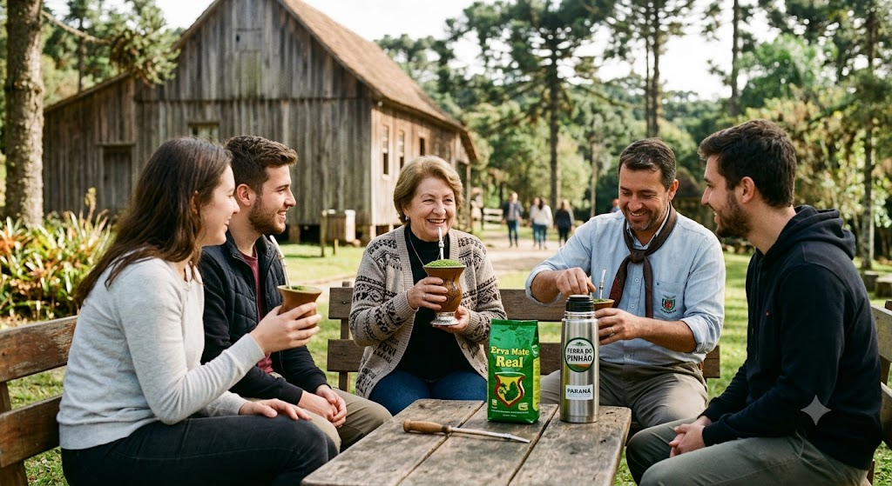
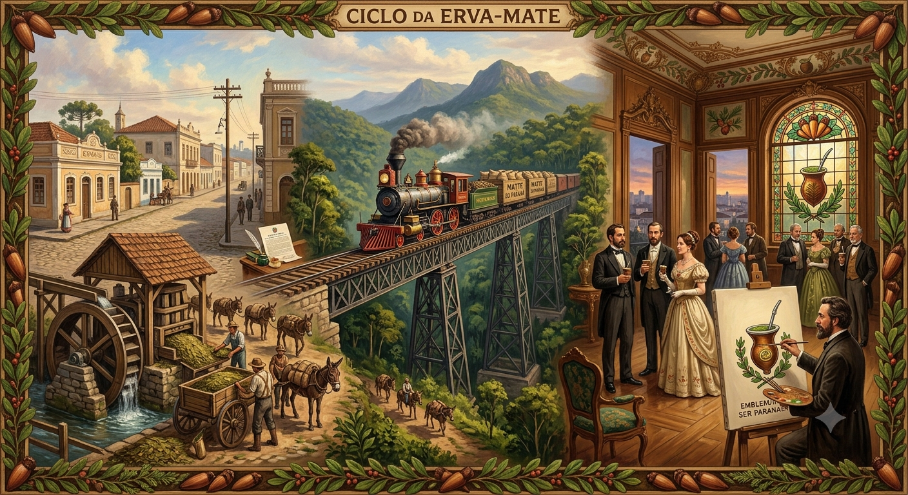

A Raiz do Paranismo: A Erva-Mate como Símbolo e Estética na Identidade Cultural
A presença da erva-mate na arte paranaense transcende o mero aspecto econômico para se consolidar como um dos pilares fundacionais da identidade cultural do estado. Imortalizada por movimentos como o Paranismo, a planta deixou de ser apenas a força motriz dos barões do chá do século XIX para se tornar um símbolo iconográfico, estampando relevos, murais, pinturas e as icônicas calçadas de petit-pavé de Curitiba. Ao transformar o cotidiano dos caboclos, o cultivo e o ritual do chimarrão em linguagem estética, os artistas locais não apenas documentaram a história do Paraná, mas traduziram a essência da terra e do seu povo em expressões visuais atemporais.

O Ouro Verde e a Construção da Identidade Paranaense
Durante o século XIX e o início do século XX, o ciclo da erva-mate figurou como o principal motor econômico e social do Paraná, impulsionando a emancipação política da província, a urbanização e o surgimento de uma rica elite local. Esse período de bonança não só financiou obras de infraestrutura decisivas, como a Ferrovia Paranaguá-Curitiba, mas também alimentou um profundo sentimento de orgulho e pertencimento na região. Foi justamente no ápice dessa prosperidade que intelectuais e artistas locais buscaram criar uma identidade visual própria, adotando o mate não apenas como fonte de riqueza, mas como o verdadeiro emblema do ser paranaense.

Curiosidades
O Símbolo Identitário do Paranismo
Durante a era de ouro do mate, artistas e intelectuais paranaenses fundaram o movimento "Paranismo". Eles buscavam criar uma identidade única para o estado e transformaram a erva-mate, junto com o pinheiro-do-paraná e o pinhão, em um verdadeiro emblema cultural. Ramos de erva-mate passaram a ser entalhados na arquitetura de casarões, desenhados em vitrais e retratados em pinturas da época.
Financiamento da Ferrovia Paranaguá-Curitiba
A grande riqueza gerada pela exportação do mate para países vizinhos como Argentina e Uruguai financiou importantes obras de infraestrutura. A principal delas foi a imponente Ferrovia Paranaguá-Curitiba, construída no final do século XIX para transportar a produção das serras até o porto, acelerando o desenvolvimento e a urbanização das cidades paranaenses.